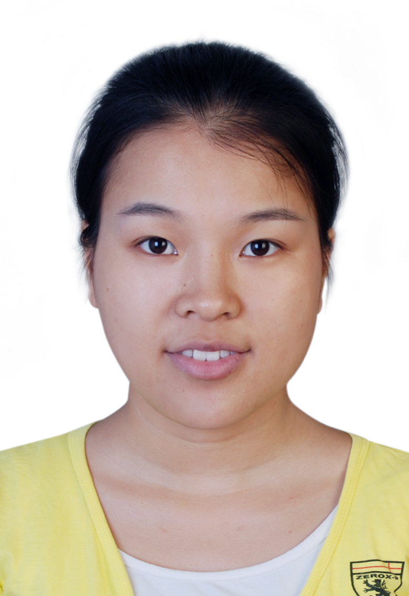

Sisi Chen
Who am I?
Dr. Chen is an Assistant Professor at the Department of Computer Science in the College of Computing and Software Engineering at Kennesaw State University. He obtained Bachelor degree in Software Engineering from Nanjing University in 2012, and Ph.D. degree in Computer Science from University of Texas at Arlington in 2019, advised by Dr. Jia Rao.
Contact info
Email: chensis1(at)msu(dot)edu
Myself
Publications
Teaching
Professional Experiences
My research interests basically include (1) characterizing the performance and issue of popular computation and networking systems [link] and (2) optimizing the inefficient and nonoptimal parts inside the systems with better designs and smarter solutions. The systems I am focusing on are those in
- operating systems (especially Linux kernal), containers and kubernetes;
- cloud computing and virtualization;
- Java virtual machines;
- software defined network (SDN) and network function virtualization (NFV)
- big data systems;
- machine learning systems [e.g., NetAI];
[TOP]